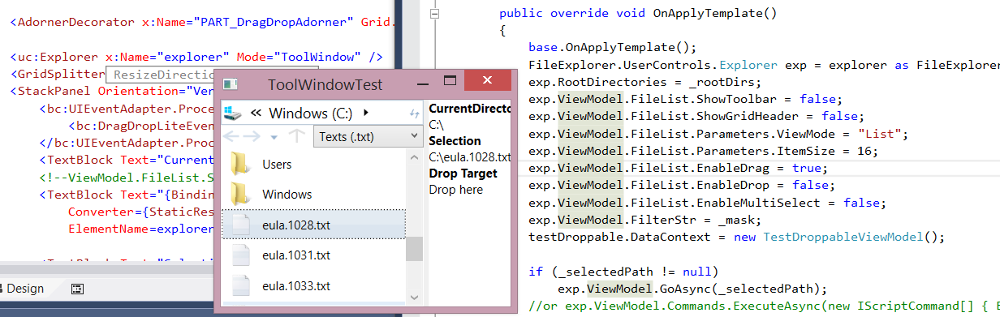

| v1
(2010) |
v2
(2012) |
v3
(2014) |
|
| .Net framework |
3.0 |
3.5/4.0 |
4.5 |
| MVVM Framework |
Cinch |
Cinch v2 |
Caliburn Micro |
| Controls |
|||
| Base Controls - DirectoryTree and FileList |
X | X | X |
| Navigation, Breadcrumb, Sidebar, Statusbar |
X |
X |
|
| TabControl and ToolWindow |
X |
||
| FilePicker and DirectoryPicker |
X |
||
| Entity | Strongly Typed | Typed (EntryModel<FI, DI, FSI>), IO specific, One at a time. |
Not typed (IEntryModel) Not IO specific |
| Supported Entity |
System.IO |
System.IO or DirectoryInfoEx |
System.IO, DirectoryInfoEx, GoogleDrive, OneDrive and DropBox |
| Context Menu |
Shell |
UserDefined |
|
| Drag and Drop |
DragDropHelper |
UIEventHub |
|
| Multi-Select |
SelectionHelper |
UIEventHub |
|
| Touch support for Drag and Drop, Multi-Select and scrolling |
X |
||
| Rename support |
X |
X |
X |
| Refresh when filesystem changed |
X |
X |
X |
| FileList: Virtual loading |
X |
X |
X |
| FileList: Column Sort |
GridView
only |
X |
|
| FileList: Column Filter, Custom Column | Filename only |
X |
|
| Entry Loading (Synchronous / Asynchoronous) | Sync | Async (AsyncObservableCollection) | Async (EntriesHelper) |
| Icon loading |
From
Shell |
From Shell (Icon Extractor) |
IProfile.GetIconExtractSequence() |
| DirectoryTree: Custom root directory |
X |
X |
X |
| Breadcrumb/DirectoryTree:Directory Lookup |
Background thread |
Bounty |
LookupAsync() method (see
BreadcrumbTree) |
| Breadcrumb structure |
NA |
List |
Tree |
FileExplorer3 uses Caliburn Micro framework. You can use ExplorerViewModel or TabbedExplorerViewModel (for multi-tab explorer) and the framework finds the View automatically.
_windowManager.ShowWindow(new ExplorerViewModel(_events, _windowManager, RootModels.ToArray()));Beside ExplorerViewModel, there's FilePicker and DirectoryPickerViewModel as well.
var filePicker = new FilePickerViewModel(_events, _windowManager, FileFilter,
FilePickerMode.Open, RootModels.ToArray()); if (_windowManager.ShowDialog(filePicker).Value) { MessageBox.Show(String.Join(",", filePicker.SelectedFiles.Select(em => em.FullPath))); }
//or...
new ScriptRunner().Run(new ParameterDic(), ScriptCommands.OpenFile(_windowManager, _events, RootModels.ToArray(), FileFilter, "demo.txt", (fpvm) => ScriptCommands.MessageBox(_windowManager, "Open", fpvm.FileName), ResultCommand.OK));
public static IExplorerInitializer getInitializer(IWindowManager windowManager,
IEventAggregator events, IEntryModel[] rootModels, params IViewModelInitializer<IExplorerViewModel>[] initalizers)
{
var retVal = new ExplorerInitializer(windowManager, events, rootModels);
retVal.Initializers.AddRange(initalizers);
return retVal;
}
...
var initializer = getInitializer(_windowManager, _events, RootModels.ToArray(), new BasicParamInitalizers(_expandRootDirectories, _enableMultiSelect, _enableDrag, _enableDrop), new ColumnInitializers(), new ScriptCommandsInitializers(_windowManager, _events, profiles), new ToolbarCommandsInitializers(_windowManager)); var sr = new ScriptRunner(); sr.Run(Explorer.NewWindow(initializer, context, null), new ParameterDic());
var _profileEx = new FileSystemInfoExProfile(events, windowManager); rootDir = _profileEx.ParseAsync(System.IO.DirectoryInfoEx.DesktopDirectory.FullName).Result;Available profile included FileSystemInfoProfile, FileSystemInfoExProfile, SkyDriveProfile, DropBoxProfile and GoogleDriveProfile, web based profile required login, please check the demo for how to use them. It's possible to map new directory in the interface, using the Map/Unmap button.

public enum DisplayType { Auto, Text, Number, Link, DateTime, TimeElapsed, Kb, Percent, Filename, Boolean, Image }
public class FileBasedMetadataProvider : MetadataProviderBase
{
public override async Task&l;IEnumerable<imetadata>> GetMetadataAsync(IEnumerable<IEntrymodel> selectedModels,
int modelCount, IEntryModel parentModel)
{
...
if (selectedModels.Count() > 0)
{
...
retList.Add(new Metadata(DisplayType.TimeElapsed, MetadataStrings.strCategoryInfo,
MetadataStrings.strCreationTime, creationTime.ToLocalTime()) { IsVisibleInSidebar = true });
retList.Add(new Metadata(DisplayType.Kb, MetadataStrings.strCategoryInfo,
MetadataStrings.strSize, size) { IsVisibleInSidebar = true });
...
}
return retList;
}
}
Profile can define a CommandProvider which provide CommandModel,
it's used to display command (MenuItem) on ContextMenu and
Toolbar.
public class ExCommandProvider : ICommandProvider
{
FileSystemInfoExProfile _profile;
public ExCommandProvider(FileSystemInfoExProfile profile)
{
_profile = profile;
}
public List GetCommandModels()
{
return new List()
{
new OpenWithCommandEx(_profile) { IsVisibleOnMenu = false, IsVisibleOnToolbar = true }
};
}
}
explorerModel.FileList.Columns.ColumnList = new ColumnInfo[]
{
ColumnInfo.FromTemplate("Name", "GridLabelTemplate", "EntryModel.Label", new ValueComparer<IEntryModel>(p => p.Label), 200),
ColumnInfo.FromBindings("Type", "EntryModel.Description", "", new ValueComparer<IEntryModel>(p => p.Description), 200),
...
};
And define the template accessible by the FileList:
<DataTemplate x:Key="GridLabelTemplate" >
<StackPanel Orientation="Horizontal">
<Image Source="{Binding Icon, Mode=OneWay}" Width="30" Height="30" />
<uc:EditBox x:Name="eb" Margin="5,0" DisplayValue="{Binding EntryModel.Label}"
...
/>
</StackPanel>
</DataTemplate>
explorerModel.FileList.Columns.ColumnFilters = new ColumnFilter[]
{
ColumnFilter.CreateNew("0 - 9", "EntryModel.Label", e => Regex.Match(e.Label, "^[0-9]").Success),
ColumnFilter.CreateNew("A - H", "EntryModel.Label", e => Regex.Match(e.Label, "^[A-Ha-h]").Success),
...
ColumnFilter.CreateNew("Today", "EntryModel.LastUpdateTimeUtc", e =>
{
DateTime dt = DateTime.UtcNow;
return e.LastUpdateTimeUtc.Year == dt.Year && e.LastUpdateTimeUtc.Month == dt.Month && e.LastUpdateTimeUtc.Day == dt.Day;
}),
};
<uc:VirtualWrapPanelView x:Key="IconView"
ColumnHeaderContainerStyle="{StaticResource ListViewExColumnHeaderContainerStyle}"
SmallChanges="{Binding Path=ItemHeight, RelativeSource={RelativeSource Self}}"
CacheItemCount="5"
ItemTemplate="{DynamicResource IconItemTemplate}"
ItemContainerStyle="{StaticResource IconItemContainerStyle}"
ItemHeight="{Binding Parameters.ItemSize}"
ItemWidth="{Binding Parameters.ItemSize}"
HorizontalContentAlignment="Left" >
</uc:VirtualWrapPanelView>
Note: Because the update to UIEventHub, Multi-Select is workable
even on non-IChildInfo supported panel, in this case, UIEventHub
uses HitTest, mentioned in the first version of MultiSelectHelper.explorerModel.FileList.Commands.ToolbarCommands.ExtraCommandProviders = new[] {
//Invoke UICommand
new CommandModel(ApplicationCommands.Delete) { IsVisibleOnMenu = true, Symbol = Convert.ToChar(0xE188) },
//Multi Level
new DirectoryCommandModel(new CommandModel(ExplorerCommands.NewFolder) { Header = Strings.strFolder })
{ IsVisibleOnMenu = true, Header = Strings.strNew, IsEnabled = true},
//Separator
new SeparatorCommandModel(),
//User defined
new ViewModeCommand( explorerModel.FileList),
};
Note: similar for DirectoryTree.Commands.ToolbarCommands.ScriptCommandBinding.FromScriptCommand(ApplicationCommands.Open, this, (ch) => ch.ScriptCommands.Open, ParameterDicConverter, ScriptBindingScope.Local), ScriptCommandBinding.FromScriptCommand(ExplorerCommands.NewFolder, this, (ch) => ch.ScriptCommands.NewFolder, ParameterDicConverter, ScriptBindingScope. ScriptCommandBinding.FromScriptCommand(ExplorerCommands.Refresh, this, (ch) => ch.ScriptCommands.Refresh, ParameterDicConverter, ScriptBindingScope. ScriptCommandBinding.FromScriptCommand(ApplicationCommands.Delete, this, (ch) => ch.ScriptCommands.Delete, ParameterDicConverter, ScriptBindingScope.Local),But some of them actually not implemented (Delete):
ScriptCommands.Open = FileList.IfSelection(evm => evm.Count() == 1,
FileList.IfSelection(evm => evm[0].EntryModel.IsDirectory,
FileList.OpenSelectedDirectory, //Selected directory
ResultCommand.NoError), //Selected non-directory
ResultCommand.NoError //Selected more than one item.
);
ScriptCommands.Delete = NullScriptCommand.Instance;
Because it's not IO specific, some commands is not implemented, e.g
double click on a file does nothing, so you will have to implement
it.
explorerModel.FileList.Commands.ScriptCommands.Open =
FileList.IfSelection(evm => evm.Count() == 1,
FileList.IfSelection(evm => evm[0].EntryModel.IsDirectory,
FileList.OpenSelectedDirectory, //Selected directory
FileList.AssignSelectionToParameter(
new OpenWithScriptCommand(null))), //This originally used by Toolbar (CommandModel), so it uses Parameter (selected entry)
ResultCommand.NoError //Selected more than one item, ignore.
);
explorerModel.FileList.Commands.ScriptCommands.Delete =
FileList.IfSelection(evm => evm.Count() >= 1,
ScriptCommands.IfOkCancel(_windowManager, pd => "Delete",
pd => String.Format("Delete {0} items?", (pd["FileList"] as IFileListViewModel).Selection.SelectedItems.Count),
ScriptCommands.ShowProgress(_windowManager, "Delete",
ScriptCommands.RunInSequence(
FileList.AssignSelectionToParameter(
DeleteFileBasedEntryCommand.FromParameter), //Same as above
new HideProgress())),
ResultCommand.NoError),
NullScriptCommand.Instance);
To make it more reusable and easier to read, I have coded
IScriptRunner, which runs IScriptCommand, there's also a number of
defined IScriptCommands available.in FileListCommandManager
ScriptCommands = new DynamicDictionary<IScriptCommand>();
...
ScriptCommands.Paste = vm.ScriptCommands.RunInSequence(
FileList.AssignCurrentDirectoryToDestination(
FileList.AssignSelectionToParameter(ClipboardCommands.Paste(ExtensionMethods.GetFileListCurrentDirectoryFunc,
(dragDropEffects, src, dest) => new SimpleScriptCommand("Paste", (pm) =>
{
dest.Profile.DragDrop.OnDropCompleted(src.ToList(), null, dest, dragDropEffects);
return ResultCommand.NoError;
})))
)
);
...
exportBindingSource.Add(
new ExportCommandBindings(
ScriptCommandBinding.FromScriptCommand(ApplicationCommands.Paste, this, (ch) => ch.ScriptCommands.Paste,
ParameterDicConverter, ScriptBindingScope.Local),
));
IEntryModel _currentDirectoryModel = null;
ToolbarCommands = new ToolbarCommandsHelper(events,
...
{
ExtraCommandProviders = new[] {
new StaticCommandProvider(new CommandModel(ApplicationCommands.Paste))
}
};
}
in FileListViewModel
protected override void OnViewAttached(object view, object context)
{
base.OnViewAttached(view, context);
var uiEle = view as System.Windows.UIElement;
Commands.RegisterCommand(uiEle, ScriptBindingScope.Local); //Register to UserControl.CommandBindings
}
public void Handle(RootChangedEvent message)
{
Queue<IScriptCommand> cmds = new Queue<IScriptCommand>();
cmds.Enqueue(Explorer.ChangeRoot(message.ChangeType, message.AppliedRootDirectories));
if (message.Sender != this)
cmds.Enqueue(Explorer.GoTo(CurrentDirectory.EntryModel));
else
switch (message.ChangeType)
{
case ChangeType.Created:
case ChangeType.Changed:
cmds.Enqueue(Explorer.GoTo(message.AppliedRootDirectories.First()));
break;
case ChangeType.Deleted:
cmds.Enqueue(Explorer.GoTo(RootModels.FirstOrDefault()));
break;
}
Commands.ExecuteAsync(cmds.ToArray());
}
Most ViewModel, starting from TabbedExplorer, Explorer,
DirectoryTree FileList, Sidebar all implements
ISupportCommandManager, which provides Commands property that can
call Execute/ExecuteAsync(), but you can call FileList,
DirectoryTree based command in ExplorerViewModel.evm.FilterStr = "Texts (.txt)|*.txt|Pictures (.jpg, .png)|*.jpg,*.png|Songs (.mp3)|*.mp3|All Files (*.*)|*.*";The CurrentDirectory is in IEntryViewModel propety type, you can get it's Icon via the Icon property (ImageSource), or access it's EntryModel property for the actual entry (from profile).
DragHelper = new TabControlDragHelper<IExplorerViewModel>(this); //..when creating new tab expvm.DropHelper = new TabDropHelper<IExplorerViewModel>(expvm, this);The Helper is re-usable so if you have a tabcontrol that want to support tab re-ordering, you can use the similar method.
//BreadcrumbBoth ViewModel is hierarchical based, root viewModel have an EntriesHelper that contains item in next level, and vice versa, for how EntriesHelper and BreadcrumbTree works, please see the BreadcrumbTree article.
await Selection.LookupAsync(value, RecrusiveSearch<IBreadcrumbItemViewModel, IEntryModel>.LoadSubentriesIfNotLoaded, SetSelected<IBreadcrumbItemViewModel, IEntryModel>.WhenSelected, SetChildSelected<IBreadcrumbItemViewModel, IEntryModel>.ToSelectedChild);
//DirectoryTree await Selection.LookupAsync(value, RecrusiveSearch<IDirectoryNodeViewModel, IEntryModel>.LoadSubentriesIfNotLoaded, SetSelected<IDirectoryNodeViewModel, IEntryModel>.WhenSelected, SetExpanded<IDirectoryNodeViewModel, IEntryModel>.WhenChildSelected);